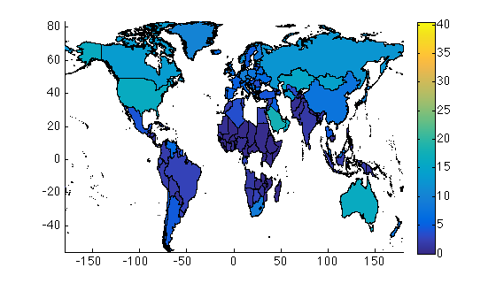
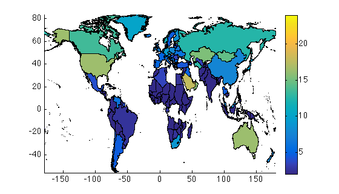
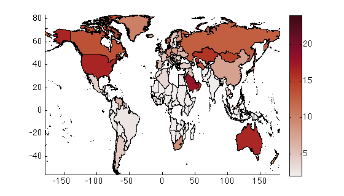
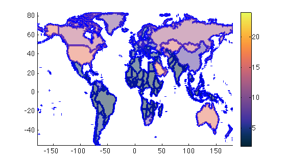

patchsc documentation
patchsc plots patch objects with face colors scaled by numeric values.
Contents
Syntax
patchsc(x,y,z) patchsc(...,'colormap',cmap) patchsc(...,'caxis',ColorAxisLimits) patchsc(...,'PatchProperty',Value,...) h = patchsc(...)
Description
patchsc(x,y,z) plots cell arrays x,y color-scaled by the numeric values in z. Dimensions of z must match the dimensions of cell arrays x and y. x and y can contain multiple sections separated by NaNs.
patchsc(...,'colormap',cmap) specifies a colormap to which face colors will be mapped. If a colormap is not specified, your default colormap will be used.
patchsc(...,'caxis',ColorAxisLimits) sets color axis limits. This is different from other functions like imagesc or surf, which allow setting color limits after plotting. patchsc does not allow changing the color axis limits after plotting. Default limits are taken as [min(z) max(z)].
patchsc(...,'PatchProperty',Value,...) specifies any patch property.
h = patchsc(...) returns handles of all the patch objects. The data element corresponding to each patch object is included in the handle 'tag' property.
Example
The emissions.mat dataset provided with this function contains CO2 emissions data for 183 countries. I did a quick job of swiping the dataset from Wikipedia and there are some missing countries, but it works well enough for this example.
You'll notice that lon and lat are 183x1 cell arrays and emissions_per_capita is 183x1 double.
load emissions figure('pos',[100 100 560 320]) patchsc(lon,lat,emissions_per_capita) colorbar axis tight
In the plot above, it's hard to get a good sense of small differences between many of the countries because the color axis limits go up to 40 due to a few outliers. If you want to change the color axis limits I'm afraid you can't simply do it by
caxis([2 24])
Instead, you'll have to replot everything, setting the color axis limits when you call patchsc.
figure('pos',[100 100 560 320]) patchsc(lon,lat,emissions_per_capita,'caxis',[2 24]) colorbar axis tight
If you don't want to use the default colormap, you can set your own. But like the caxis limits, you'll have to set the colormap when you call patchsc. I like the perceptually-uniform cmocean colormaps by Thyng et al., 2016.
figure('pos',[100 100 560 320]) patchsc(lon,lat,emissions_per_capita,'caxis',[2 24],'colormap',cmocean('amp')) colorbar axis tight
You can also specify any patch property, including facealpha, linewidth, edgecolor, etc. You can really make it as hideous as you'd like.
figure('pos',[100 100 560 320]) patchsc(lon,lat,emissions_per_capita,'caxis',[2 24],... 'colormap',cmocean('thermal'),... 'edgecolor','blue',... 'linewidth',3,... 'facealpha',0.5) colorbar axis tight
Author Info
This function and supporting documentation were written by Chad A. Greene of the University of Texas Institute for Geopyhsics (UTIG), May 2017.